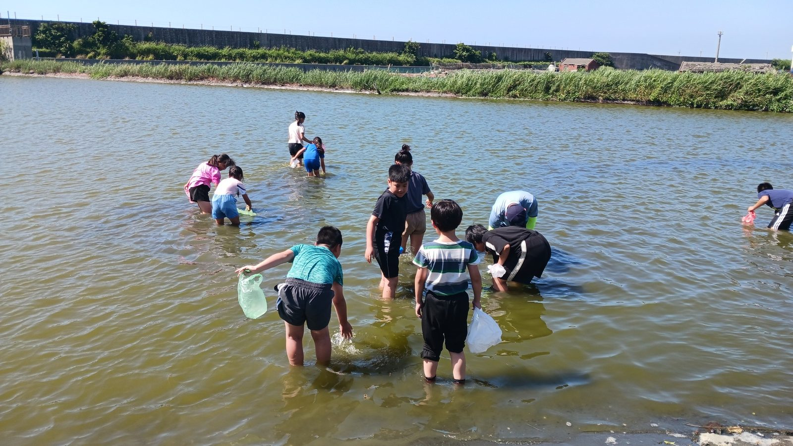
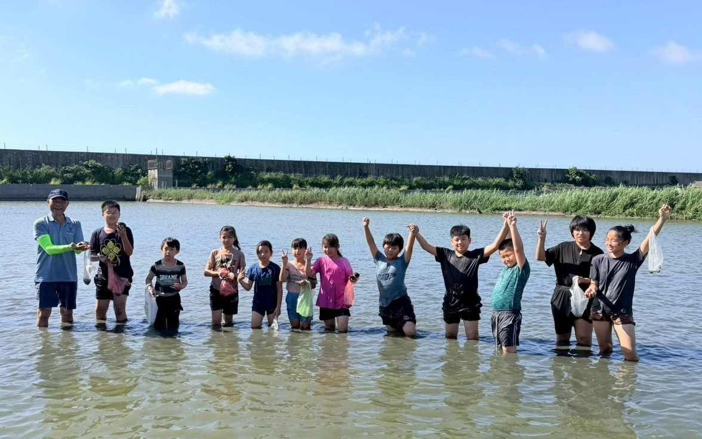

Hands in the Mud — Reading the Golden Clam Industry
To bring students closer to the township's own industries and the ecology behind them, Sigang ran a hands-on field study with Erhlin Community College — the "Knowing the Clam" module of the school's 12-year national-education plan. The day moved from in-class biology of golden clams to a real wade-in clam-digging experience by the water. 為了讓學生深入認識家鄉在地產業與自然生態，今天與二林社大合作十二年國教計畫的「蜆為人知」課程安排學生實地參與摸蜆體驗活動。從課堂中的黃金蜆生態介紹，到親自下水體驗摸蜆過程，學生們不僅收穫滿滿知識，也留下難忘回憶。
Before stepping into the water, Principal Hong walked the class through local aquaculture, the gear used, and the techniques of clam-digging. Then everyone slipped in for the part they had been waiting for. 活動開始前，信德校長先向同學介紹在地養殖特色及相關裝備、摸蜆的方式，接著下水展開期待已久的摸蜆體驗。
In the water, children combed the mud carefully with their hands — and turned up not just golden clams but a few surprise large river mussels, sparking shouts and laughter all round. Each student found their own style: some scanned slowly, some hunted by touch, some sat, some knelt, some lay flat, some swam. 在活動過程中，同學們小心翼翼地用雙手在泥沙中摸索，除了成功摸到黃金蜆外，還有學生驚喜摸到體型較大的大河蚌，讓現場驚呼連連、氣氛十分熱鬧。每位同學都展現不同的摸蜆技巧，有人慢慢探查泥沙，有人靠觸感快速尋找，有人坐著、趴著、跪著、爬著、游著，方法各具特色。
The instructor invited students to share their own methods and what surprised them. Hands went up, voices overlapped, laughter carried. Through their own bodies, the students didn't just learn golden-clam ecology — they felt the labour and dignity of the local industry that runs on it. 講師也特別邀請學生分享自己的摸蜆方式與心得，同學們踴躍發言，交流彼此的發現與經驗，現場充滿歡笑聲。透過親身體驗，學生不僅更加認識黃金蜆生態，也感受到在地產業的辛勞與價值。
The event ran smoothly thanks to the instructor's careful guidance and the community-college volunteers and parents' association chair who accompanied the day from start to finish. Sigang holds to the idea that learning lands deepest when it's lived — and today that idea was waist-deep in mud. 此次活動能夠順利完成，除了感謝講師細心指導外，也特別感謝社大志工、家長會長全程協助與陪伴，讓學生能安心參與體驗。透過寓教於樂的課程安排，學生在實作中學習，在體驗中成長，也更加了解地方產業。

